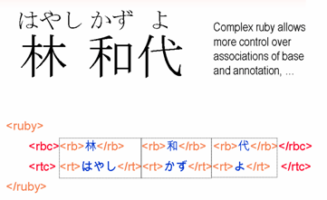
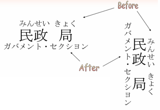
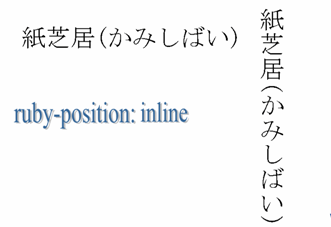
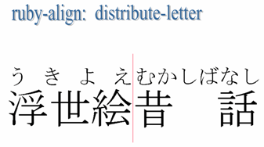
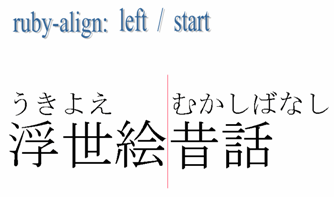
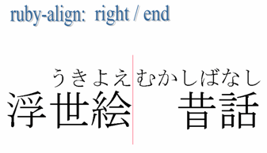
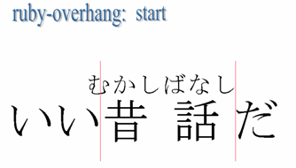
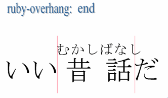

Ruby is a name for small annotations that are rendered alongside base text. This is especially useful for Japanese and other East Asian content (ruby is known as furigana in Japanese).
The Ruby Annotation specification provides a way to mark up ruby text, and has been adopted as an XHTML 1.1 module. Work is under way in CSS3 on mechanisms to support styling of ruby text.
This article will introduce you to the basic mechanisms, and discuss the current state of the art with regards to ruby support.
Who is Ruby?
Unfortunately, this ruby doesn't refer to a glamourous woman. This more prosaic technical term refers to a particular type of annotation associated with a base text. The name 'ruby' originated from a named font size (about half the size of the normal 10 point font) used by British typesetters.
Typically ruby is used in East Asian scripts to provide phonetic transcriptions of obscure characters, or characters that the reader is not expected to be familiar with. For example it is widely used in education materials and children’s texts. It is also occasionally used to convey information about the meaning of ideographic characters.
In Japanese, where ruby is called furigana, phonetic transcriptions typically appear in hiragana above horizontal text and to the right of vertical text. Although ruby in Japanese is often in hiragana, it is also possible to occasionally find annotations in kanji, katakana (particularly in Japanese 'manga' comics) and Latin text.
Furigana typically appears below horizontal text, and to the left of vertical text on the rare occasions that it is used to express semantic information.

The use of ruby annotation is not limited to Japanese. Indeed it is not necessarily limited to any of the Asian scripts. It can be used as an annotation device for many different applications, such as linguistic glossing and annotation.
This following illustration shows examples of ruby text using Latin, kanji, and katakana for annotating base text.

This shows Simplified Chinese characters annotated with pinyin transliterations below each character.

Such annotation in Traditional Chinese commonly uses bopomofo characters to indicate pronunciation, and rather than the annotation appearing above the main text, it is included vertically to the right of each character, whether the main text flows vertically or horizontally.
Note how the tone marks appear to the right of the column of alphabetic bopomofo characters.
Ruby markup
There are two aspects to dealing with ruby text: the first is to provide structural information through markup that relates the ruby and its base text; the second is to address presentational (styling) questions, such as whether long ruby text overlaps adjacent base text, whether short ruby text is centered or left aligned over a long base text, etc. In this section we look at expressing the structure using markup.
The W3C Recommendation Ruby Annotation (also available in Japanese) describes markup that can be used for ruby support.
The specification defines two variants of ruby markup, called simple ruby markup and complex ruby markup.
Simple ruby
Simple ruby markup associates a single run of ruby text with a run of base text.

The example above shows the desired visual result, followed by the markup that should produce that.
We are looking to place the hiragana sequence かみしばい over the top of the base text 紙芝居, which is part of a longer sentence. The annotation is usually in a small font size.
The first step is to surround both the base text and the annotation with ruby markup. Then, within that, add
the base text to a rb (ruby base) element, and the annotation to a rt (ruby text) element, in that
order. And that's it. Whether your user agent knows how to display this markup is another question, which we will get to later.
The markup for the whole sentence would therefore be:
<p>これは<ruby><rb>紙芝居</rb><rt>かみしばい</rt></ruby>です。</p>
Complex ruby
Complex ruby markup can define more fine-grained associations between annotations and base text, and can associate two ruby texts with one base text. Let's look at this in easy steps.
Whereas the example of simple ruby markup we saw earlier associated a whole run of annotation text with a whole run of base text,
complex ruby markup allows you to indicate which bit of annotation relates to which character within a single ruby element.

The example above shows the three characters in the base text 林和代 annotated for pronunciation with the three strings はやし, かず and よ. Each annotation is clearly aligned with its respective character.
To markup up the data in a way that enables us to achieve this we use two new elements, rbc (ruby base
container), and rtc (ruby text container). In the simplest case (shown on the slide), each of these elements contains the
same number of rb and rt elements, respectively. In this way, an rb element
and its respective rt element can be effectively paired together.
This is analogous to use of td elements within tr elements in HTML tables.
The markup for the whole, as shown on the slide, is:
<ruby>
<rbc><rb>林</rb> <rb>和</rb>
<rb>代</rb></rbc>
<rtc> <rt>はやし</rt><rt>かず</rt><rt>よ</rt> </rtc>
</ruby>
The rule is: simple ruby has no rbc or rtc elements; complex ruby has rtc and rtc elements.
One-to-many associations. We can get a little more clever about this. In the diagram below we use the same example, but the annotation is split into only two runs: the first above the family name, 林, and the second above the given name 和代. In other words, we have associated one run of annotations with multiple runs of base characters.

This is achieved by applying a method familiar to those who have created tables in HTML. The second and third rt elements become one, with the addition of an rbspan attribute whose value is, in this case, 2.
The markup is now as follows:
<ruby>
<rbc><rb>林</rb> <rb>和</rb>
<rb>代</rb></rbc>
<rtc> <rt>はやし</rt><rt rbspan="2">かずよ</rt> </rtc>
</ruby>
Multiple annotations. In our final example of complex ruby annotation we show how to associate base text with 2 annotations at the same time. The example at the top of the illustration below shows this for Japanese, where one annotation runs above the base text, and the other below.

In the example we keep this simple, using only a single rb and rt pair. What is new
here is that we have two rtc elements within the ruby element (but still only one rbc element).
Here is the code:
<ruby>
<rbc><rb>民政局</rb></rbc>
<rtc><rt>みんせいきょく</rt></rtc>
<rtc><rt>ガバメント・セクシヨン</rt></rtc>
</ruby>
You cannot have more than two rtc elements associated with a single rbc element.
Default display of the markup
The Ruby Annotation specification provides no normative text about placement of annotations, leaving it up to the implementation. There are, however, some informative suggestions for user agents with regard to default styling. (There are also useful style properties specified in the CSS3 Ruby Module, which we will discuss in the next section.)
If an implementation follows the advice in the specification you could expect the font size of the annotation to be about half the height of the base text, and for the annotation in simple ruby to appear before the base text. 'Before', in this case, is a technical term used to refer to the area above a normal line of horizontal text, and the area to the right of a line of vertical text whose columns progress right-to-left (eg. vertical Chinese, Japanese and Korean text). You would also expect the ruby text to have the same directionality as the base text (ie. vertical or horizontal). If there are multiple annotations for a single base, you would expect the first to appear before the base, and the second after, ie. below horizontal text and to the left of vertical text whose columns progress right-to-left.
'Before' means to the left of a line of vertical Mongolian text, since the columns progress left-to-right.

This is likely to produce the expected results for Japanese text, but expected behavior may be different in other scripts. The specification notes, for example, that pinyin ruby commonly appears after the base text in Chinese. Additional styling support would be needed to achieve this in simple ruby.
Likewise, the specification draws attention to the fact that bopomofo ruby on Chinese text commonly appears to the right of characters in horizontal text but offers no advice about how to handle that.
Details of ruby formatting in a Japanese print context can be found in JIS X 4051 ("Formatting rules for Japanese documents" (日本語文書の組版方法) JIS X 4051:2004, Japanese Standards Association, 2004 (in Japanese)).
We will also see (next) that there are fallback features defined in the standard that enable base text and ruby to be presented sequentially on user agents that don't yet handle the markup.
A fallback mechanism
While we are discussing rendering, there is one more bit of markup that we have not yet explored. If a user agent doesn't understand how to display ruby text, it will just display the base text immediately followed by the ruby text, using the same font size (as shown in the slide). This will be confusing to the reader.
The rp (ruby parenthesis) element allows you to specify characters that will appear around simple ruby text if
the user agent doesn't support ruby presentation. You are most likely to want to use parentheses here, but any character or sequence of characters is
valid.

If we add rp elements before and after the ruby text as in this example, when a user agent fails to recognize
the ruby text it will now appear within parentheses, which is much more acceptable. User agents that do know how to handle ruby will automatically
hide the contents of the rp elements as they display the ruby in the appropriate location.
<ruby>
<rb>紙芝居</rb>
<rp>(</rp>
<rt>かみしばい</rt>
<rp>)</rp>
</ruby>
We can use any character within the rp element. For example, Japanese uses different characters sometimes for
parentheses.

Note that this fallback mechanism is not available for complex ruby.
Ruby style
The CSS3 Ruby Module provides a number of properties for describing the placement of ruby text in relation to the base text. Note that this specification is not yet finalized, so this section will aim to give you an idea of what will be possible using this specification, rather than exhaustively listing all the capabilities.
We will use the words 'before' and 'after' with the same meaning as described earlier.
There are three main properties: ruby-position, ruby-overhang, and ruby-align.
Topics we will not discuss here include:
- the
ruby-spanproperty - a small number of property values
- the ruby box model and a set of related values for the
displayproperty that can be used to associate arbitrary XML markup with ruby constructs defined in the Ruby Annotation specification.
Ruby position
The first property, ruby-position, allows you to indicate where ruby text should appear relative to the base
text.
ruby-position can have the following values: before, after, inline, and right. You would apply this style to the ruby element.
To position the ruby text above horizontal base text or to the right of vertical text, use ruby-position: before. This is
the default behavior.
To position the ruby text below horizontal base text or to the left of vertical text, use ruby-position: after.

For example, if your document contains Chinese text with pinyin ruby, and you want all ruby to appear below the base text, you would include the following in your CSS declarations:
ruby { ruby-position: after; }
If you want to force the ruby text to appear inline you would use ruby-position: inline. Note that due to an error this
is not explained in the current version of the CSS3 Ruby specification.

The parentheses in the illustration above need to be provided in the rp markup.
Ruby alignment
The ruby-align property addresses the relative alignment of ruby and base text when one is longer than the
other. Basically the effect is applied to whichever is shorter, the ruby text or the base text. It takes the following values: auto, left, start, center, end, right, distribute-letter, distribute-space, and line-edge.
Two separate words are chosen for these examples, one to the left, one to the right of the vertical line. This line is purely to separate the examples on the slides, and is not a product of the styling.
If you apply auto the behavior is left up to the implementation, but the recommended behavior (described by
the JIS 4051 standard) is to apply distribute-letter to full-width Chinese, Japanese or Korean characters, but to apply center to others. This is the default behavior.
ruby-align: distribute-letter spreads the shorter text by applying even inter-character spacing so that the beginning
edges of the first ruby and base character are aligned, as are the end edges of the last ruby and base characters.

ruby-align: distribute-space does the same as ruby-align: distribute-letter, but a small space is left
before the first and after the last of the affected characters.

ruby-align: center aligns the centers of the ruby text and base text.

ruby-align: left and ruby-align: start are synonymous, and the result is to align the start of both ruby
text and base text.

ruby-align: right and ruby-align: end are synonymous, and the result is to align the end of both ruby text
and base text.

Ruby overhang
If the ruby text is wider than the base text you can specify whether or not it overhangs any surrounding base text, and to what
amount, using the ruby-overhang property. It takes the following values: auto, start, end, and none.
To allow the ruby text to overlap surrounding base characters on both sides use ruby-overhang: auto. It is up to the
implementation to decide how much overlap to allow, but the JIS 4051 standard recommends a maximum of one ruby character width. The implementation
may also apply this selectively depending on the type of character - again there are rules for this in the JIS standard.
This is the default value.

ruby-overhang: start only allows ruby text to overhang the preceding base characters.

ruby-overhang: end only allows ruby text to overhang the following base characters.

ruby-overhang: none prevents any overhang.

Implementing ruby
Specifications
The Ruby Annotation markup specification became a W3C Recommendation in May 2001, so this is completed work.
Ruby annotation markup is not valid in HTML 4 or XHTML 1.0 documents. However, the specification is one of the modules that make up XHTML 1.1. It is also expected to be one of the modules in XHTML 2.0, which is in development.
The work being undertaken by the Internationalized Tag Set (ITS) Working Group at the W3C to produce a markup vocabulary that schema developers can use to support internationalization and localization will most likely incorporate the ruby markup.
The CSS3 Ruby Module moved to Candidate Recommendation on 14 May 2003, but still needs some editorial work. Once the text is finalized, it will be necessary to find some implementations, and create and apply tests to move the specification to Proposed and then full Recommendation status.
Implementation status
The Ruby Annotation markup specification defines two levels of conformance. Implementations can support just simple ruby markup, or both simple and complex markup.
Internet Explorer 5+ supports simple ruby markup in various types of document. Although the actual implementation is not exactly the
same as the specification, it still does the right thing with standard markup. This means that when rendering it places ruby text above base text and
removes any characters in rp elements. Since this markup is not standard for HTML or XHTML 1.0, we cannot advise that you
use it for those formats (your pages will no longer validate). However, simple ruby is also supported for XHTML 1.1 documents, where its use is valid.
The W3C browser, Amaya, supports both simple and (to a large extent) complex ruby display.
There is an extension for Mozilla, Netscape 7 and Firefox browsers that supports both simple and complex ruby, including rbspan, for pages served as "application/xhtml+xml" (not as "text/html"). However, the download location warns that:
"This extension sometimes causes crush when you show popup menus, load webpages, or operate tabs, because it intrudes into operations about loading pages. Please don't use it if you would like to use stable browser."
Masayasu Ishikawa also wrote an article that proposes some workarounds for rendering simple ruby in Mozilla/Firefox, Safari and Opera version 8.
There are some tests for simple and complex ruby markup on the W3C site.
Internet Explorer also provides very limited support for some of the CSS3 Ruby Module properties, but not always using the same property values as defined in the specification. Otherwise you are unlikely to find support for these properties yet - which is hardly surprising, since the specification is not yet a recommendation.
Further reading
-
There is useful information about ruby in Ken Lunde's book, CJKV Information Processing (ISBN 1-56592-224-7), especially chapters 6 and 7.